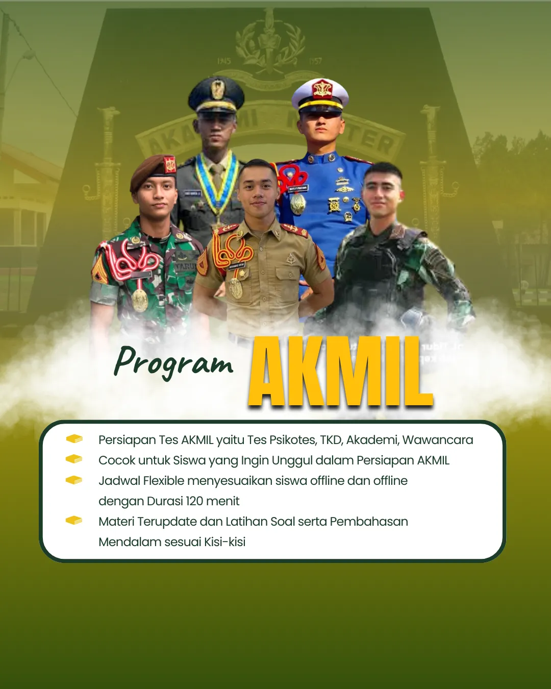
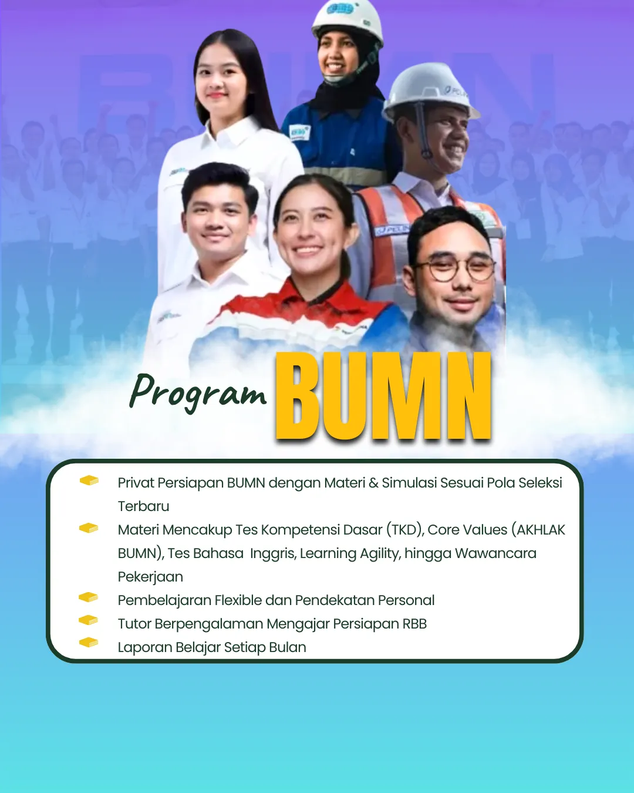

Sebelum mengikuti bimbingan, saya masih kesulitan memahami pola soal seleksi. Bersama tutor Privat Nusantara, saya mendapatkan arahan belajar yang lebih terstruktur dan lebih percaya diri menghadapi ujian.

Mempersiapkan diri menghadapi seleksi Calon Pegawai Negeri Sipil (CPNS) membutuhkan pemahaman materi, kemampuan menganalisis soal, serta strategi pengerjaan yang tepat. Kehadiran guru privat yang memahami materi seleksi ASN dapat membantu peserta menjalani proses belajar dengan lebih efektif.
Privat Nusantara menghadirkan Guru Privat CPNS Profesional untuk mendampingi peserta mempelajari materi Seleksi Kompetensi Dasar (SKD), membedah pola soal TWK, TIU, dan TKP, serta memperbaiki hasil latihan melalui pembahasan dan evaluasi bersama tutor.
Setiap peserta mendapatkan pendampingan belajar yang menyesuaikan kemampuan awal dan kebutuhan persiapan masing-masing. Dengan bantuan guru privat, peserta dapat mendiskusikan materi yang belum dipahami, mengidentifikasi kesalahan pengerjaan, dan mengembangkan strategi untuk menghadapi seleksi ASN.
Tersedia pilihan pembelajaran tatap muka bersama tutor maupun kelas online melalui Zoom atau Google Meet. Konsultasikan kebutuhan belajar Anda untuk mendapatkan rekomendasi program dan guru privat yang sesuai.
Konsultasi Gratis
Rating Kepuasan Siswa
Guru Privat
Tingkat Keberhasilan Siswa
Kota Layanan di Indonesia

Memahami konsep dan materi seleksi CPNS.
Mengenali pola soal dan pilihan jawaban.
Mempelajari strategi pengerjaan yang efektif.
Memperbaiki kesalahan melalui pembahasan soal.
Mengukur perkembangan melalui latihan dan tryout berkala.
Seleksi CPNS menguji berbagai kemampuan melalui materi yang memiliki karakteristik berbeda. Peserta perlu memahami konsep, mengenali pola pertanyaan, dan mengetahui cara menentukan jawaban yang tepat.
Melalui layanan Guru Privat CPNS, Privat Nusantara membantu peserta mendapatkan pendampingan belajar secara personal. Guru tidak hanya menyampaikan materi, tetapi juga membimbing peserta memahami proses penyelesaian soal dan memperbaiki kesalahan selama latihan.
Guru privat membantu peserta mempelajari tiga komponen utama SKD, yaitu Tes Wawasan Kebangsaan, Tes Intelegensia Umum, dan Tes Karakteristik Pribadi.
Setiap materi dibahas berdasarkan konsep, karakter soal, dan pendekatan penyelesaian yang relevan dengan kebutuhan peserta.
Peserta mendapatkan kesempatan untuk membedah berbagai tipe soal bersama guru.
Pembahasan mencakup cara memahami pertanyaan, menganalisis pilihan jawaban, dan menentukan metode pengerjaan yang lebih efektif.
Guru membantu peserta mengevaluasi hasil latihan untuk menemukan kesalahan yang sering muncul.
Hasil evaluasi menjadi dasar dalam menentukan materi yang perlu diperdalam dan kemampuan yang masih harus ditingkatkan.
Belajar secara mandiri memang dapat membantu peserta mengenal materi seleksi CPNS. Namun, tidak semua kesulitan dapat diselesaikan hanya dengan membaca teori atau mengerjakan kumpulan soal.
Guru privat memberikan kesempatan kepada peserta untuk mendapatkan penjelasan secara langsung, mendiskusikan soal yang sulit, dan mengetahui alasan di balik setiap jawaban.
Konsultasi Guru Privat CPNSMelalui pendampingan Guru Privat CPNS Privat Nusantara, peserta dapat:

Privat Nusantara membantu peserta mendapatkan pendampingan belajar yang sesuai dengan kebutuhan dan target seleksi ASN.
Mendiskusikan target dan materi yang perlu dipelajari.
Menyesuaikan pengajar dengan kebutuhan pembelajaran.
Mendapatkan penjelasan sesuai kemampuan peserta.
Menyesuaikan waktu les dengan aktivitas harian.
Meninjau hasil latihan untuk mengetahui kemajuan.
Guru Privat CPNS Privat Nusantara mendampingi peserta mempelajari tiga kelompok materi utama Seleksi Kompetensi Dasar. Setiap materi memiliki karakteristik pengujian tersendiri sehingga membutuhkan pemahaman konsep dan pendekatan pengerjaan yang berbeda.
TWK mengukur pemahaman peserta mengenai nasionalisme, ideologi negara, konstitusi, serta nilai-nilai kehidupan berbangsa dan bernegara.
Guru membantu peserta memahami konsep kebangsaan, menghubungkan berbagai materi, dan menganalisis pertanyaan berdasarkan konteks yang diberikan.
Peserta juga mendapatkan pembahasan mengenai pilihan jawaban agar dapat memahami alasan suatu jawaban lebih tepat dibandingkan pilihan lainnya.
TIU mengukur kemampuan verbal, numerik, dan figural. Peserta membutuhkan kemampuan berpikir logis, menganalisis informasi, serta menyelesaikan permasalahan secara cermat.
Guru privat membimbing peserta mengenali pola pertanyaan, memahami konsep perhitungan, dan mempelajari berbagai metode penyelesaian soal.
Pembahasan dilakukan untuk membantu peserta mengetahui letak kesalahan, memilih pendekatan yang sesuai, dan meningkatkan ketepatan pengerjaan.
TKP mengukur karakteristik dan perilaku peserta dalam menghadapi situasi yang berkaitan dengan lingkungan kerja dan pelayanan publik.
Guru membantu peserta memahami indikator perilaku yang diuji, menganalisis situasi dalam soal, dan mempertimbangkan respons yang paling tepat berdasarkan konteks permasalahan.
Pembahasan setiap pilihan jawaban membantu peserta memahami pertimbangan di balik penentuan respons dalam soal TKP.
Memilih guru privat untuk persiapan CPNS bukan hanya tentang mencari pengajar yang menguasai materi. Peserta juga membutuhkan pendamping yang mampu menjelaskan konsep, membedah soal, dan membantu memperbaiki kesalahan selama proses belajar.
Privat Nusantara menghadirkan layanan guru privat dengan sejumlah keunggulan untuk mendukung persiapan seleksi ASN.
Peserta mendapatkan pendampingan dari pengajar yang disesuaikan dengan kebutuhan materi pembelajaran. Guru membantu menjelaskan konsep, membahas latihan soal, dan memberikan pemahaman mengenai karakteristik setiap materi SKD.
Guru memberikan perhatian terhadap perkembangan setiap peserta. Materi dan pembahasan dapat difokuskan pada bagian yang belum dikuasai sehingga proses belajar tidak hanya mengikuti satu pola untuk semua peserta.
Peserta dapat mendiskusikan berbagai tipe soal bersama guru. Pembahasan tidak berhenti pada jawaban benar, tetapi juga mencakup proses berpikir, konsep, dan alasan pemilihan jawaban.
Guru membantu peserta mengenali pola pertanyaan, menentukan pendekatan penyelesaian, serta mengembangkan strategi pengerjaan sesuai karakter materi TWK, TIU, dan TKP.
Peserta mendapatkan kesempatan untuk mengerjakan latihan soal dan mengikuti evaluasi kemampuan. Hasilnya dapat digunakan untuk mengidentifikasi kelemahan serta menentukan materi yang perlu dipelajari kembali.
Peserta dapat berkonsultasi mengenai jadwal pembelajaran berdasarkan aktivitas dan ketersediaan guru. Pengaturan jadwal membantu peserta menjaga konsistensi belajar selama masa persiapan seleksi.
Privat Nusantara menyediakan dua pilihan metode pembelajaran untuk mendukung persiapan seleksi CPNS. Peserta dapat memilih metode belajar berdasarkan lokasi, aktivitas, dan kebutuhan pendampingan bersama guru.
Peserta dapat mengikuti pembelajaran secara langsung bersama guru di lokasi yang telah disepakati.
Melalui metode tatap muka, peserta dapat berinteraksi langsung dengan guru, mengajukan pertanyaan, dan mendiskusikan soal yang belum dipahami.
Guru juga dapat memberikan penjelasan secara lebih personal berdasarkan kesulitan yang ditemukan selama pembelajaran berlangsung.
Bagi peserta yang memiliki keterbatasan jarak atau aktivitas yang padat, tersedia pembelajaran melalui Zoom atau Google Meet.
Guru tetap memberikan penjelasan materi, pembahasan soal, latihan, dan diskusi secara interaktif.
Peserta dapat mengikuti proses belajar dari lokasi masing-masing tanpa harus datang ke tempat les.
Privat Nusantara menerapkan proses pembelajaran bertahap agar guru dapat memahami kebutuhan peserta dan memberikan pendampingan sesuai perkembangan kemampuan.
Peserta menyampaikan target seleksi, kemampuan awal, materi yang ingin diprioritaskan, serta waktu persiapan yang tersedia.
Informasi tersebut membantu tim Privat Nusantara memahami kebutuhan belajar sebelum merekomendasikan program dan guru privat.
Tim membantu menentukan fokus materi, metode pembelajaran, jadwal, serta guru berdasarkan kebutuhan peserta dan ketersediaan pengajar.
Peserta mengikuti sesi belajar bersama guru untuk memperdalam materi TWK, TIU, dan TKP.
Guru menjelaskan konsep, membedah pola pertanyaan, memberikan latihan soal, serta membahas kesalahan yang ditemukan selama proses pengerjaan.
Peserta mengikuti latihan dan simulasi untuk mengukur perkembangan kemampuan.
Guru kemudian membantu mengevaluasi hasil pengerjaan, mengidentifikasi kelemahan, dan menentukan materi yang perlu diperdalam.
Temukan berbagai program pendampingan belajar lainnya dari Privat Nusantara untuk mendukung kebutuhan pendidikan dan persiapan seleksi.
Pendampingan belajar bersama guru untuk mempelajari materi SKD, membedah pola soal TWK, TIU, dan TKP, serta mengevaluasi hasil latihan.

Program pendampingan belajar untuk mempersiapkan seleksi Pegawai Pemerintah dengan Perjanjian Kerja.

Persiapan seleksi Akademi Militer melalui pembelajaran akademik dan materi pendukung seleksi.

Pendampingan persiapan seleksi Akademi Kepolisian sesuai kebutuhan peserta.

Program persiapan seleksi sekolah kedinasan dengan pembelajaran sesuai materi dan tujuan instansi.

Pendampingan persiapan seleksi rekrutmen Badan Usaha Milik Negara.

Privat Nusantara menyediakan layanan pendampingan belajar CPNS di berbagai kota di Indonesia. Peserta dapat berkonsultasi mengenai ketersediaan tutor, metode pembelajaran, dan pilihan program sesuai wilayah masing-masing.
Beberapa wilayah layanan Privat Nusantara meliputi:
Temukan informasi mengenai layanan Guru Privat CPNS, materi pembelajaran, metode belajar, hingga pendaftaran program di Privat Nusantara.
Guru Privat CPNS merupakan layanan pendampingan belajar personal untuk membantu peserta mempersiapkan seleksi Calon Pegawai Negeri Sipil. Guru mendampingi peserta mempelajari materi SKD, membedah pola soal TWK, TIU, dan TKP, serta mengevaluasi hasil latihan.
Materi utama mencakup Tes Wawasan Kebangsaan (TWK), Tes Intelegensia Umum (TIU), dan Tes Karakteristik Pribadi (TKP). Peserta mempelajari konsep, karakteristik soal, serta pendekatan penyelesaian setiap materi bersama guru.
Ya. Guru membantu peserta membedah soal, memahami konsep yang digunakan, menganalisis pilihan jawaban, dan mengetahui penyebab kesalahan dalam pengerjaan.
Ya. Guru membantu peserta mengenali karakter soal dan mempelajari pendekatan pengerjaan yang sesuai dengan materi TWK, TIU, dan TKP. Pembahasan juga dapat mencakup cara meningkatkan ketelitian dan mengelola waktu pengerjaan.
Bisa. Peserta yang baru mulai mempersiapkan seleksi CPNS dapat mengikuti pembelajaran dari penguatan konsep dasar. Guru akan menyesuaikan pembahasan dengan kemampuan dan kebutuhan belajar peserta.
Ya. Privat Nusantara menyediakan pilihan pembelajaran online melalui Zoom atau Google Meet serta les tatap muka bersama guru di lokasi yang disepakati, sesuai ketersediaan pengajar.
Biaya program menyesuaikan kebutuhan materi, metode pembelajaran, jumlah pertemuan, dan ketersediaan guru. Hubungi tim Privat Nusantara untuk memperoleh informasi biaya dan rekomendasi program.
Anda dapat menghubungi tim Privat Nusantara melalui WhatsApp untuk melakukan konsultasi gratis. Sampaikan kebutuhan persiapan dan target seleksi agar tim kami dapat membantu merekomendasikan program serta guru privat yang sesuai.
Pengalaman peserta dan orang tua selama mengikuti pendampingan belajar bersama tutor Privat Nusantara.
Sebelum mengikuti bimbingan, saya masih kesulitan memahami pola soal seleksi. Bersama tutor Privat Nusantara, saya mendapatkan arahan belajar yang lebih terstruktur dan lebih percaya diri menghadapi ujian.
Program belajar Privat Nusantara membantu anak saya mempersiapkan ujian dengan lebih disiplin. Materi dijelaskan dengan baik dan latihan soal membuat persiapannya semakin matang.

Metode belajar yang diberikan tutor sangat membantu. Pembahasan soal menjadi lebih mudah dipahami dan saya jadi mengetahui strategi yang tepat dalam menghadapi tes.

Menghadapi seleksi CPNS membutuhkan pemahaman materi dan kemampuan menganalisis soal secara tepat. Peserta juga perlu mengetahui letak kesalahan dalam latihan agar dapat memperbaiki kemampuan sebelum menghadapi ujian sesungguhnya.
Melalui layanan Guru Privat CPNS Profesional, Privat Nusantara membantu peserta mempelajari materi TWK, TIU, dan TKP bersama tutor yang mendampingi proses pembelajaran secara personal.
Mulai dari penguatan konsep, pembahasan pola soal, strategi pengerjaan, hingga evaluasi hasil latihan, setiap proses belajar membantu peserta mengenali kemampuan dan bagian yang masih perlu ditingkatkan.
Dapatkan pendampingan belajar bersama Guru Privat CPNS Privat Nusantara. Konsultasikan kebutuhan Anda dan temukan guru yang sesuai untuk mempersiapkan seleksi ASN.